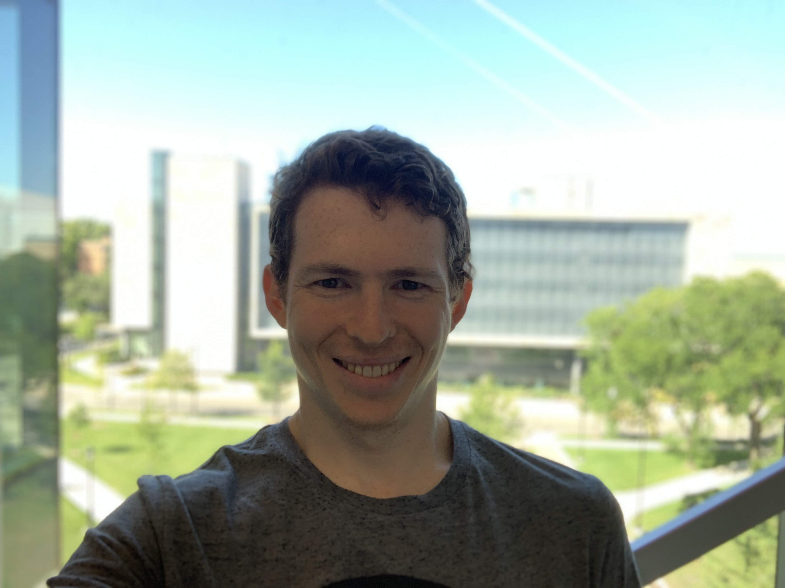

Cameron Barrie

Research Interests
My primary research interests revolve around the intersection of computer science
and cognitive science. More specifically, I am interested in how the cognitive
abilities of humans might be extracted and applied in ways that can enhance the
capabilities of artificial intelligence to produce cognitive systems that can in
turn further augment human ability.
Contact
cameron.barrie@u.northwestern.edu
(503) 480-9101
MUDD 3209